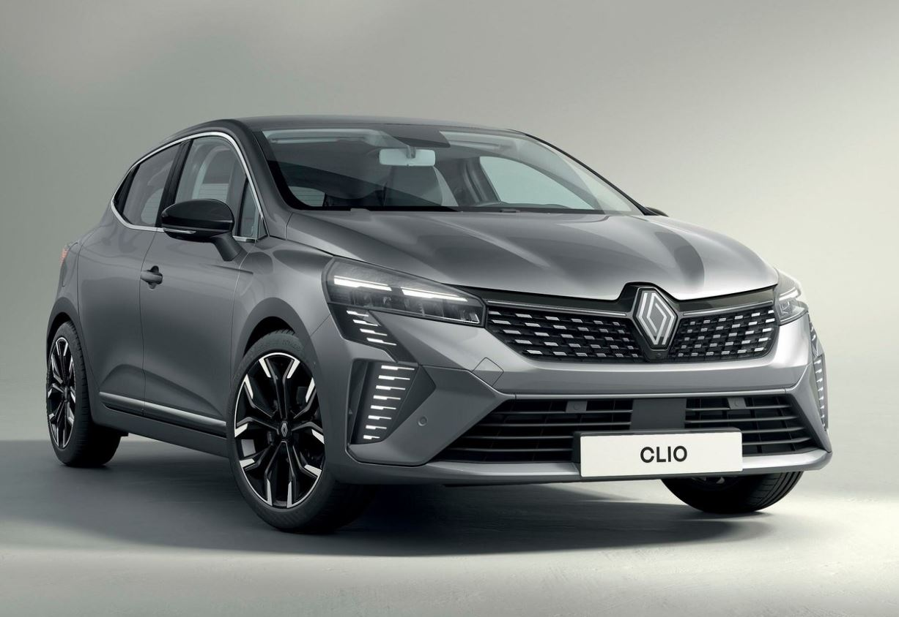

Agence de Marseille
Située sur le Vieux-Port, notre agence principale vous accueille 7 jours sur 7 de 8 h à 19 h. Plus de 80 véhicules disponibles.
AutoLoc Méditerranée
Située sur le Vieux-Port, notre agence principale vous accueille 7 jours sur 7 de 8 h à 19 h. Plus de 80 véhicules disponibles.
À deux pas de la Promenade des Anglais, retrouvez nos citadines, cabriolets et utilitaires pour explorer toute la Côte d'Azur.
Notre agence de Montpellier vous propose de nombreux véhicules pour vos déplacements dans la région.

Idéale pour se déplacer en ville et se garer facilement, la Clio offre 5 places, un coffre généreux et une faible consommation. Elle est proposée avec kilométrage illimité et assistance 24 h/24. Réservez dès maintenant pour profiter de la saison estivale sur le littoral méditerranéen.
À partir de 39 € / jour